El número indica la versión es decir que hay 80 versiones en total hasta la fecha, Las letras A, B, C solo son para los Demos indican las revisiones que hice, siendo A que hice una sola revisión y C que hice 3 revisiones.
entonces comenzamos por el principio en la versión 001
Primera semana - diseño
comenze el desarrollo de este juego desde casi un día después que anunciaron el tema de la GB compo 23 es decir junio 15
los 2 días siguientes me propuse que es lo que iba hacer, aquí hay una imagen de lo que era mi idea inicial
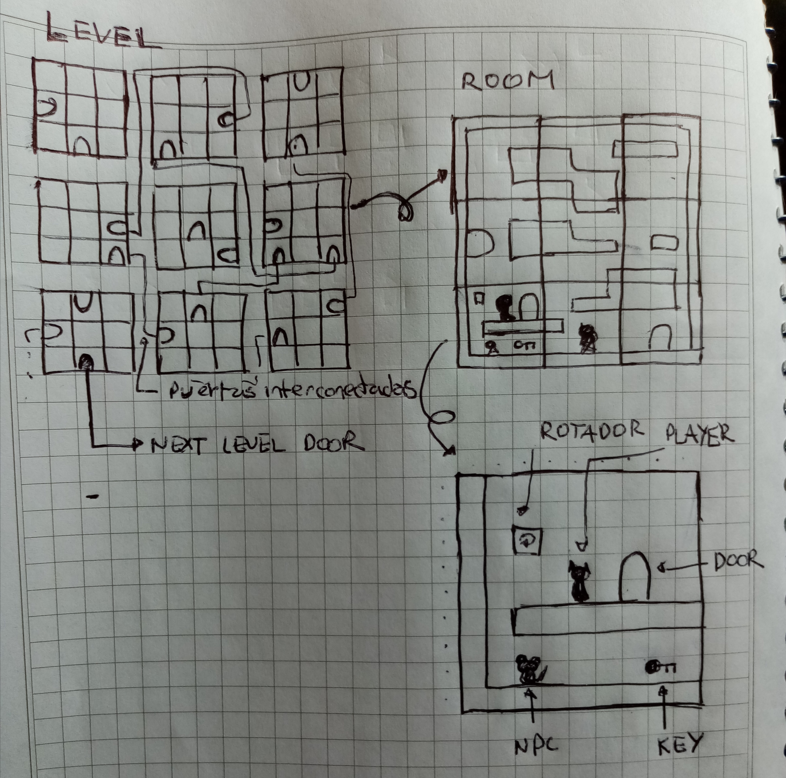
después continúe con el desarrollo de los personajes
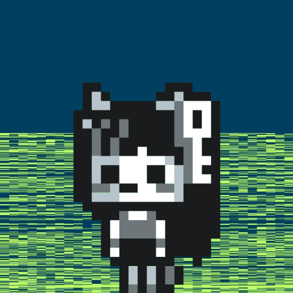
Segunda semana - empezando la programación
lo primero que hice fue básicamente dibujar a keychan xd
012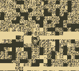
y fui definiendo primero la función que haría que mi sprite rotace
también dibuje a las ratóncitas
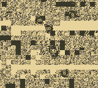
hasta aquí es la versión 014
017Tercera semana - programando los movimientos
empezaron los problemas, necesitaba que todo se viera fluido ya que al tener más personajes en pantalla no me iba a servir hacer animación con delay, así que cambie la animación para usar sys_time, surgieron desincronizaciones y otros problemas. Luego agregué una mapa de prueba algo reciclado y también surgió el problema de los coliders
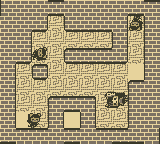
esta es la versión 043
043Cuarta semana - el problema feo de los colliders y alistando una primera demo
estaba casi toda esta semana también la anterior intentando arreglar los colliders desde varios enfoques y ninguno me resultó, así que me di una pausa de eso y empecé a hacer la parte de la historia es decir a armar la sinematica inicial y tratar de hacer una demo para presentarla en mejora tu juego jam, aunque el juego seguía estando roto, hasta que de último momento se me ocurrió la idea de simplemente limitar el movimiento haciendo básicamente que no te puedas mover si no hay piso y se soluciono temporalmente pues me gustaba que todo fuera más fluido
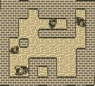
versión 52
052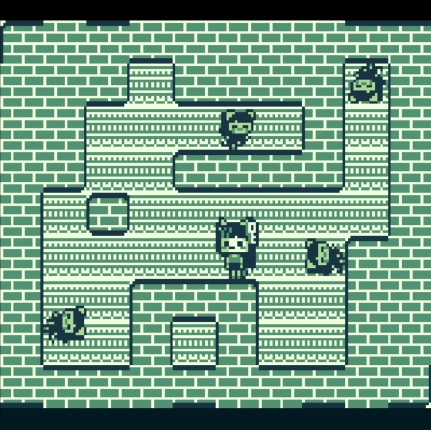
Quinta semana
continuando con el desarrollo, empece a implementar el generador de niveles más grandes además de una forma de hacer scroll en estos
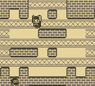
versión 055
055Luego fui corrigiendo el mismo, además de hacer que los npc spawmeen en zonas específicas para evitar que se encuentren atrapados cuando cambia el mapa
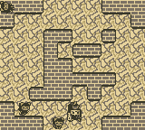
versión 061
061También hice un experimento de música dinámica jugando con los registros de sonido y quedo bastante bien, para la escena inicial también es que usando los registros de sonido encontré que el canal de ruido tiene un divisor periódico o algo así que da ritmos interesantes así que con solo use una convinacion de un par de estos tiende a sonar bien en BGB y en my OldBoy pero en el emulador web suena algo raro no se como lo hará en un Gameboy de verdad
en la parte de los colliders lo que hice fue hacer parches susecivos lo primero fue verificar situaciones especificas en diagonal y el input y desactivar temporalmente la gravedad, tiende a ser más flexible pero aveces con inputs rápidos tiende a fallar así que hice que si en la posición en la que esta el jugador es sólida simplemente hacer que se eleve lo cual hace a veces que se salga del mapa así que hice que hiciera respawn justo al medio, si no se me ocurrió otra cosa por el momento
Hice también que la escena inicial se pueda saltar
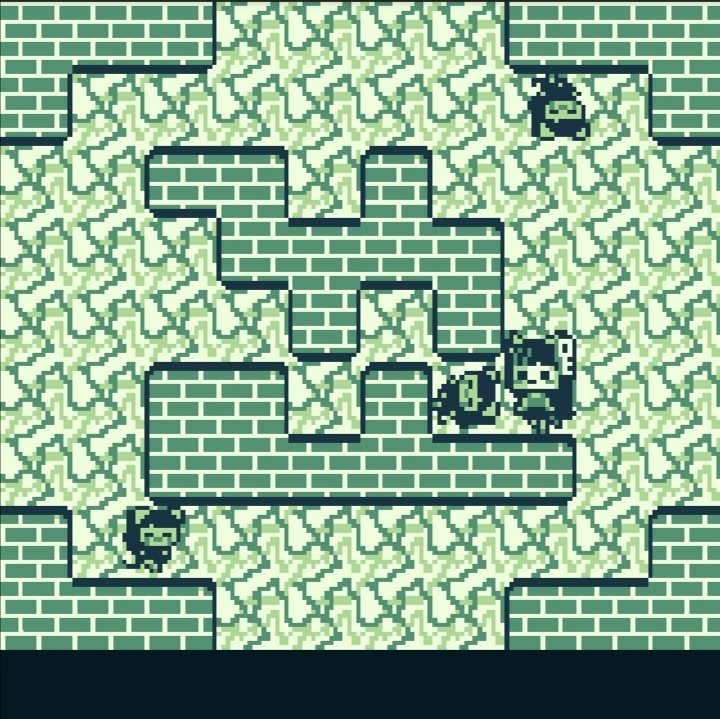
Version 067
067Sexta semana
hice que el generador pueda generar los 9 rooms de un nivel y lo guarde en la batería
ahora quise mejorar la pantalla de título y pues por fin supe como hacer funcionar el gbt player así que con milky tracker y un poco de ayuda de chatgpt no hice solo una sino tres canciones y pues como quiero que mi juego sea full procedurally y que te de una sensación diferente cada vez que lo jueguen pues agregue las tres (talvez haga más)
también le pase a chatgpt la música dinámica que hice (usando un switch case y los registros de sonido) y le dije que hiciera una composición nueva y pues hizo básicamente un dubstep así que lo puse cuando el HP sea bajo para dar más adrenaline, talvez le haga algún retoque porque tiene notas bastante agudas
con lo cual implemente el HP también la barra de vida
agregue el efecto de fade in y fade out para la sinematica.
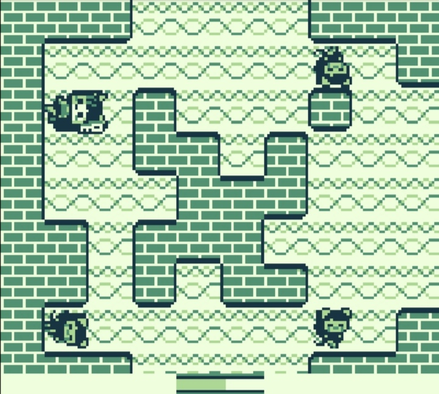
Séptima semana
Aquí me tomé un descanso... zzzzz
Octavia semana
Version 080
080programe un algorimo para poder generar las puertas y sus conexiones y un sudoku
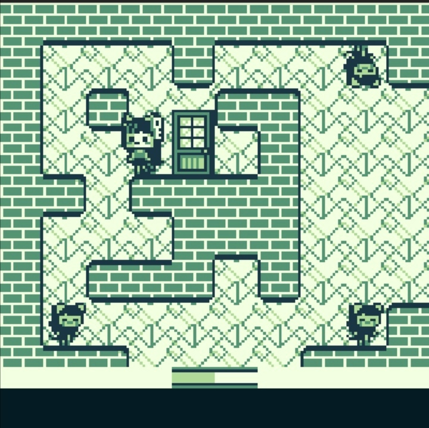
Novena semana
Aquí por culpa de la nueva actualización de gbdk2020 4.2 que utiliza el sdcc tuve que reescribir gran parte de las declaraciones de las funciones y algunas operaciones cambiando % y / por operaciones de bits >>y <<<
También agregue las voces
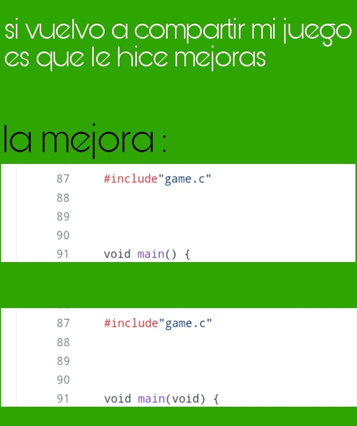
Décima semana
Version 089
089Hice un revisión final y de último momento agregué las cajas cerradas, además de la parte del HID y en la parte de carga agregue un pequeño tutorial
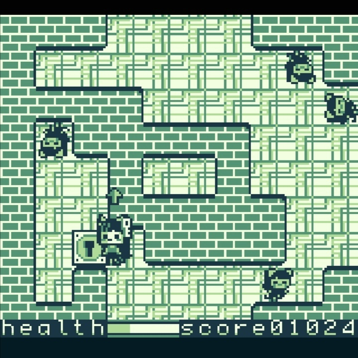